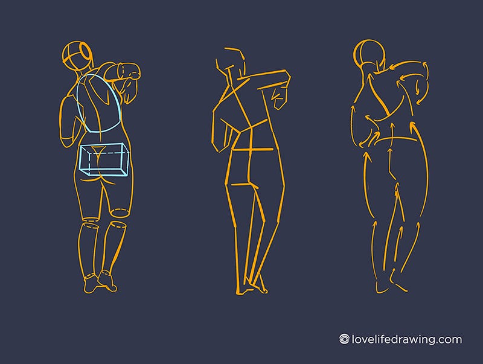
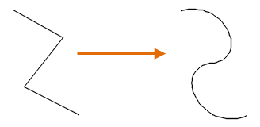
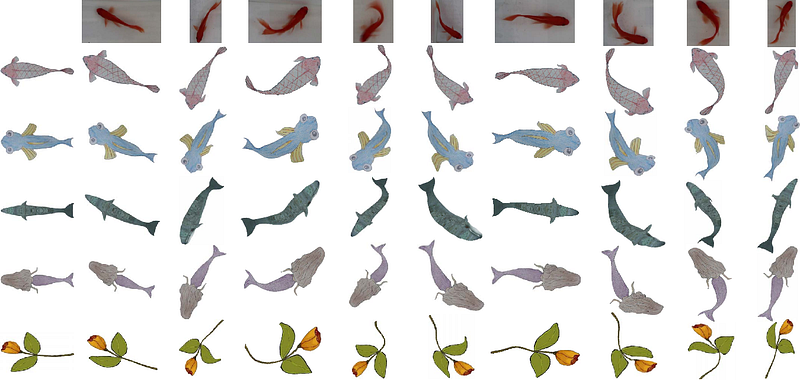

動態的其中一種我稱之為流動(flow)，從許多教學或是文章都可以看到這個詞，概念上不外乎與流暢、柔美、靈動等形容詞有關，似乎有種模糊的想法，尤其是在Gesture的練習之中可以看到這樣的圖。

圖1 Structural and Gestural
左邊是將人結構化的畫出來，中間是利用直線去概括結構，右邊則是利用曲線去概括，而這就是所謂的flow，反過來想，難道只要有曲線就是flow嗎？很明顯的，應該不只如此，顯然曲線只是flow的其中一個要件，換句話說，產生flow的因素不只有曲線，但是這篇則是限縮討論的範圍，只純粹的考慮直曲與flow的關係，
同時為了方便討論，文章後續將用中文「流動」來專指直曲與flow的關係，而不會使用flow，這是因為flow是相對複雜的議題，也就是說這篇文章並不會覆蓋所有flow相關的議題。
「直線屬於人類，曲線屬於上帝。」--Antoni Gaudí
事實上，直曲對比並不單獨發生在Gesture上，也發生在建築這個領域上，這句話可以用一些生活中的例子去理解，大多數有明確稜角的物品通常都是人工的產物，在繪畫中常見的的例子就像是機械、建築等，大多數都是由直線所構成，相反的，大多數自然的產物多是以曲線為主，例如植物、動物多數是由較平滑的曲線所構成，因此，直線通常代表無機，曲線則是有機。
值得澄清的是，此處的直線更多的是指折線(polyline)，因此如果要更準確的來區分是否為曲線，線條與線條連接處(轉折點)是否平滑才是核心差異，因為折線之所以不是曲線是因為在轉折處不平滑，相反的，曲線也有轉折點，但是相當平滑，會需要這樣區分是因為，如果只是一條直線，他其實是平滑的，因為他的甚至沒有轉折。

圖2 折線平滑後會變成曲線
因此，容我先整理定義一下名詞，廣義的曲線包含任何有彎曲的線，或者更直接的說，非直線就是曲線，換句話說，連折線都屬於曲線，這顯然違反直覺，因為狹義的曲線基本上需要有一定的平滑程度，因為折線在轉折點不平滑，因此不屬於狹義的曲線，我們大概可以依據彎曲程度與平滑程度將畫成這張圖。
簡而言之，不是一條筆直的線就是廣義的曲線，其中，如果轉折足夠平滑那就是狹義的折線，反之則是折線，因此，這篇首先對比的是曲線與直線，然後是對比曲線(curve)與折線(polyline)，以及這些差異對於流動感的影響。事實上，你可以把折線視為曲線的特例，因此核心問題是為甚麼畫面需要曲線，或者說，曲線能為畫面帶來什麼效果，
直線與曲線
首先，曲線顧名思義，就是有曲率的線，相對於直線來說，就是在方向上有變化的線，而這個變化則會造成動的感受，相對直線來說，因為直線雖然是筆直、流暢、光滑的，但是因為缺乏變化，通常表示穩定的感受，而非動的感受。
因此，對於曲線有人用靈動、律動、搖晃(wobble)等詞彙去形容，相反的，直線會是穩定、平靜等詞彙，因此，曲線與直線最大的差異在於變化，這個變化能在畫面上用來表示水的流動、魚在游動、旗在飄動，這種寫意的表現，事實上，水龍頭流出的水也有可能是垂直的，魚在游動的過程中可能也有一瞬間是筆直的，旗子在風大的時候也可能呈現直向的，這種寫實的表現未必可以讓觀眾有動的感受，儘管事實上是這樣。

圖3 Motion Capture and Retargeting of Fish by Monocular Camera
可以參考
這篇論文中的圖片(圖3)，魚在游動的過程不總是呈現彎曲的，但是在表現上，有彎曲的魚似乎更有
游動的感覺，或者我們可以進一步的說，
有變化的線，也就是廣義的曲線會讓觀眾有
動的感受，相對於直線而言。
除了兩者差異之外，直曲基本上都可以表現流暢這樣的感受，舉一個常見的元素來說，黑長直就是一個相當流暢，但是穩定的感受，如果從我之前的練習中挑這三張來舉例(雖然不是黑髮)，從左至右流動感從弱到強，主要是因為左圖(圖4.a)大多數由直線所構成(頭髮、裙襬、臉頰)，而中圖(圖4.b)雖是曲線，但是彎曲的程度沒有這麼大(頭髮、臉頰)，而右圖(圖4.c)的曲線則有較明顯的彎曲(頭髮、臉頰)。
圖4.a, 4.b, 4.c
你可能會對於圖4.b, c誰更流動有不一樣的感受，因為圖4.b看起來似乎有股從由右至左的風，看起來似乎更有流動的感受，而圖4.c雖然頭髮有更多的變化，但是似乎不夠不夠流暢，這是因為流動的強弱不只是取決於線的彎曲程度，或者說，線的彎曲程度只影響動的強弱。
若我將三種類型的線在分別在三張圖上飆出來就會更明顯，當然，每張圖不可能都是由同一種線組成的，例如圖4.a的臀部是曲線，圖4.b, c的背部是直線，但是值得注意的是，圖4.a的直線較多，圖4.b的平滑的曲線較多，圖4.c的彎曲曲線較多，因此三張圖會顯現出不同的調性。
圖5.a, 5.b, 5.c
如果數值化舉例，假設圖5.a中直線的彎曲程度=0%，圖5.b的曲線彎曲程度=50%，圖5.c的曲線彎曲程度=70%，也可以直接想像成三張圖感受到「動」的強弱也是0%、50%、70%。
--
如果覺得有幫助到你或是想支持我歡迎給我GP或是贊助！
--
這篇的內容蠻多是自己思考出來的，
唯一的訴求就是用一個容易理解的論點解釋常見的問題，
因為當初蠻多論述是一段一段想出來的，因此整體脈絡可能稍嫌混亂，
但是實在是寫太久就先這樣吧。